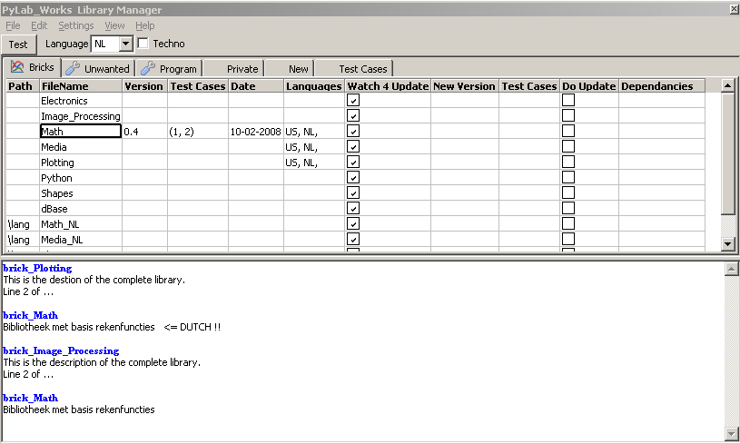

October 2008
Library Manager
With the Library Manager it's easy to compare / update / rollback your local files with the latest files on the web. The library manager scan your PyLab_works directories and the PyLab_Works Website, compares these two and gives you a nice overview of the differences. The you can decide on an individual file base which files should be updated to the latest version.
Below is image of the Bricks tab, which is a good example of all the other groups.
